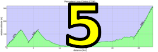

|  |  |
| Dai "Die Hard" Sieh sprints to finish first among group 4 after starting groups as a volunteer (Cara Coburn) |
Exceptionally heavy October rains left behind green hillsides as Low-Key experienced Mines Road at its best, gorgous vistas perhaps taking a bit of an edge over the road's more typical feeling of parched desolation. But it was remote enough that many Low-Key regulars decided to give this one a pass, but those who participated were treated to a special day. It was clearly a change of pace from the usual Low-Key dynamic, with an opening climb hard enough to test the legs but not enough to permanently shatter starting groups. So for many it came down to the final, relatively short climb to Ruth's Memorial at the top of the Mines summit, passing an uncountable number of Pence/Trump stickers along the way.
In the hybrid-electric division Bill Bushnell once again asserted his dominance, his riding limited as much by navigating Mines Road's frequent turns than by power-to-mass.
In the men's division, it came down to a close sprint among the top of group 1, with David Collet taking the win over Kirt Scheibelhut, Chris Evand, Kevin Metcalf. Bill Laddish, and Joe Sullivan, with Dennis Wall, Scott Gammon, and Hanns Detlefsen just a few seconds back. Team Easy Riders proved their sprinting savvy by sweeping the top three spots.
In the women's field, Katie Quinn also of Easy Riders, took advantage of having qualified for group 2 by getting the high score for the day, men or women. Shaena Berlin Jennie Phillips, and Marty Scott, all in group 3, finoshed only around 2 minutes slower.
Among the teams, it was another week of Easy Rider domination, with Sisters and Misters taking advantage of their "home" climb by scoring a solid second for the week, doing even better in points to the overall with the addition of volunteer points. LGBRC was third.
KOM special mention qualifiers indicated with orange background.
| pl | # | name | team | cat | time | mph | fph | score |
|---|---|---|---|---|---|---|---|---|
| 1 | 239 | Katie Quinn | Easy Riders | 30- | 63:55 | 16.86 | 1909 | 130.69 |
| 2 | 23 | Shaena Berlin | Easy Riders | 2 | 65:35 | 16.43 | 1861 | 126.95 |
| 3 | 121 | Jennie Phillips | Sr's & Mr's of No Mercy | 50+ | 65:41 | 16.41 | 1858 | 126.73 |
| 4 | 138 | Marty Scott | LGBRC | Just Make It To The Top | 65:57 | 16.34 | 1850 | 126.15 |
| 5 | 47 | Bonnie Denoyer | LGBRC | 45+ | 72:57 | 14.77 | 1673 | 112.58 |
| 6 | 226 | Anna Janas | Stanford Cycling | Katie's Domestique ;) | 76:07 | 14.16 | 1603 | 107.31 |
| 7 | 605 | Jan Periquet | Team CVC | LKHC Noob | 87:43 | 12.29 | 1391 | 91.43 |
| 8 | 60 | Laura Egley | Dos Egleys | 50+ | 90:58 | 11.85 | 1342 | 87.75 |
| 9 | 603 | Andrea Ivan | Silicon Valley Triathlon | 60+ | 101:53 | 10.58 | 1198 | 77.22 |
100 point reference time for division Women = 81:01
| pl | # | name | team | cat | time | mph | fph | score |
|---|---|---|---|---|---|---|---|---|
| 1 | 37 | David Collet | Easy Riders | 45+ | 56:35 | 19.04 | 2157 | 121.35 |
| 1 | 133 | Kirk Scheibelhut | Easy Riders | 25+ | 56:35 | 19.04 | 2157 | 121.35 |
| 1 | 63 | Christopher Evans | Easy Riders | 1 | 56:35 | 19.04 | 2157 | 121.35 |
| 1 | 101 | Kevin Metcalfe | Hammering for Howard | 1 | 56:35 | 19.04 | 2157 | 121.35 |
| 1 | 90 | Bill Laddish | Team CVC | 45+ | 56:35 | 19.04 | 2157 | 121.35 |
| 1 | 147 | Joseph Sullivan | San Jose Bike Club | 35+ | 56:35 | 19.04 | 2157 | 121.35 |
| 7 | 156 | Dennis Wall | Easy Riders | 35+ | 56:42 | 19.01 | 2152 | 121.07 |
| 8 | 72 | Scott Gammon | Legendary | 6 | 56:47 | 18.98 | 2149 | 120.87 |
| 9 | 254 | Hanns Detlefsen | Sr's & Mr's of No Mercy | 40+ | 56:49 | 18.97 | 2148 | 120.79 |
| 10 | 93 | Bradley Lovegren | Easy Riders | 25+ | 58:16 | 18.49 | 2095 | 117.41 |
| 11 | 309 | Zachary Ulissi | Easy Riders | 2 | 58:46 | 18.34 | 2077 | 116.28 |
| 12 | 207 | Paul Castonguay | Team DNA | 50+ | 59:48 | 18.02 | 2041 | 114.01 |
| 13 | 122 | Alex Poloziouk | Kovarus | 40+ | 60:19 | 17.87 | 2023 | 112.91 |
| 14 | 144 | Daryl Spano | San Jose Bike Club | 50+ | 60:21 | 17.86 | 2022 | 112.84 |
| 15 | 120 | Jim Perreira | Mt. Madonna Maulers | 50+ | 60:47 | 17.73 | 2008 | 111.93 |
| 16 | 172 | Chase King | Team Swift | Junior | 60:49 | 17.72 | 2007 | 111.86 |
| 17 | 607 | Kevin Vanderende | Oaktown Wheelmen | 45+ | 60:55 | 17.69 | 2003 | 111.66 |
| 18 | 411 | Bruce Pauly | Sr's & Mr's of No Mercy | 55+ | 61:00 | 17.67 | 2001 | 111.49 |
| 19 | 45 | Andrew Crews | Diablo | 45+ | 61:19 | 17.57 | 1990 | 110.84 |
| 20 | 604 | Mark Massey | Pen Velo/Pomodoro | 50+ | 62:32 | 17.23 | 1952 | 108.41 |
| 21 | 68 | Joseph Fong | Team CVC | 4 | 63:55 | 16.86 | 1909 | 105.76 |
| 21 | 126 | James Rainbow | Pen Velo/Pomodoro | 40+ | 63:55 | 16.86 | 1909 | 105.76 |
| 23 | 601 | Steve Fielding | Max Entropy | 45+ | 65:46 | 16.39 | 1856 | 102.41 |
| 24 | 20 | Bruno Acklin | Clagnuts | 55+ | 65:55 | 16.35 | 1851 | 102.15 |
| 25 | 235 | Frank Paysen | Diablo | 55+ | 67:02 | 16.08 | 1821 | 100.23 |
| 26 | 140 | Dai Sieh | Clagnuts | Second Wind | 68:07 | 15.82 | 1792 | 98.43 |
| 27 | 148 | Andy Sutterfield | San Jose State University | 25+ | 68:49 | 15.66 | 1773 | 97.30 |
| 28 | 119 | Ramon Periquet | Team CVC | Getting Old Guy | 69:36 | 15.48 | 1753 | 96.07 |
| 29 | 21 | Nigel Allen | Oso | 40+ | 69:44 | 15.45 | 1750 | 95.86 |
| 30 | 29 | Scott Byer | 50+ | 70:46 | 15.23 | 1725 | 94.28 | |
| 31 | 600 | Carl Butler | Sr's & Mr's of No Mercy | 60+ | 71:15 | 15.12 | 1713 | 93.56 |
| 32 | 606 | Dinh Trinh | Team DNA | 45+ | 71:28 | 15.08 | 1708 | 93.24 |
| 33 | 124 | Thomas Preisler | LGBRC | 60+ | 72:40 | 14.83 | 1679 | 91.50 |
| 34 | 62 | Jed Estep | 4 | 74:13 | 14.52 | 1644 | 89.35 | |
| 35 | 227 | Rupesh Kapoor | Slightly Old | 74:30 | 14.46 | 1638 | 88.97 | |
| 36 | 59 | Fred Egley | Dos Egleys | 50+ | 74:32 | 14.46 | 1637 | 88.92 |
| 37 | 158 | Brian Ward | Grumpy Old Men (GOM) | 40+ | 78:42 | 13.69 | 1551 | 83.63 |
| 38 | 55 | Frank Drobot | Team Djament | 65+ Over The Hill And Overweight | 79:37 | 13.53 | 1533 | 82.54 |
| 39 | 22 | Gabriel Beddingfield | Nest | 40+ | 80:49 | 13.33 | 1510 | 81.16 |
| 40 | 27 | Nicholas Brummell | Atlas | 55+ | 81:04 | 13.29 | 1505 | 80.88 |
| 41 | 142 | Kevin Smith | LGBRC | 55+ | 81:05 | 13.29 | 1505 | 80.86 |
| 42 | 129 | Adem Rudin | Race to Space | Make It To All The Tops | 82:59 | 12.99 | 1471 | 78.77 |
| 43 | 244 | Gregory P Smith | Grumpy Old Men (GOM) | Just Make It To The Top | 83:46 | 12.86 | 1457 | 77.94 |
| 44 | 205 | Adam Bry | Skydio | 30+ | 94:25 | 11.41 | 1293 | 68.09M |
100 point reference time for division Men = 67:10
| pl | # | name | team | cat | time | mph | fph | score |
|---|---|---|---|---|---|---|---|---|
| 1 | 6 | Bill Bushnell | Low-Key | 38:58 | 27.65 | 3132 | 100.18 |
100 point reference time for division Hybrid Electric = 39:01
| pl | team | score | riders |
|---|---|---|---|
| 1 | Easy Riders | 378.99 | David Collet, Kirk Scheibelhut, Christopher Evans, Dennis Wall, Bradley Lovegren, Zachary Ulissi, Katie Quinn, Shaena Berlin |
| 2 | Sr's & Mr's of No Mercy | 359.01 | Hanns Detlefsen, Bruce Pauly, Jennie Phillips, Carl Butler |
| 3 | LGBRC | 330.23 | Marty Scott, Bonnie Denoyer, Thomas Preisler, Kevin Smith |
| 4 | Team CVC | 323.18 | Bill Laddish, Joseph Fong, Ramon Periquet, Jan Periquet |
| 5 | 272.60 | Scott Byer, Jed Estep, Rupesh Kapoor | |
| 6 | San Jose Bike Club | 234.20 | Joseph Sullivan, Daryl Spano |
| 7 | Pen Velo/Pomodoro | 214.17 | Mark Massey, James Rainbow |
| 8 | Diablo | 211.06 | Andrew Crews, Frank Paysen |
| 9 | Team DNA | 207.25 | Paul Castonguay, Dinh Trinh |
| 10 | Clagnuts | 200.58 | Bruno Acklin, Dai Sieh |
| 11 | Dos Egleys | 176.68 | Fred Egley, Laura Egley |
| 12 | Grumpy Old Men (GOM) | 161.57 | Brian Ward, Gregory P Smith |
| 13 | Hammering for Howard | 121.35 | Kevin Metcalfe |
| 14 | Legendary | 120.87 | Scott Gammon |
| 15 | Kovarus | 112.91 | Alex Poloziouk |
| 16 | Mt. Madonna Maulers | 111.93 | Jim Perreira |
| 17 | Team Swift | 111.86 | Chase King |
| 18 | Oaktown Wheelmen | 111.66 | Kevin Vanderende |
| 19 | Stanford Cycling | 107.31 | Anna Janas |
| 20 | Max Entropy | 102.41 | Steve Fielding |
| 21 | Low-Key | 100.18 | Bill Bushnell |
| 22 | San Jose State University | 97.30 | Andy Sutterfield |
| 23 | Oso | 95.86 | Nigel Allen |
| 24 | Team Djament | 82.54 | Frank Drobot |
| 25 | Nest | 81.16 | Gabriel Beddingfield |
| 26 | Atlas | 80.88 | Nicholas Brummell |
| 27 | Race to Space | 78.77 | Adem Rudin |
| 28 | Silicon Valley Triathlon | 77.22 | Andrea Ivan |
| 29 | Skydio | 68.09 | Adam Bry |